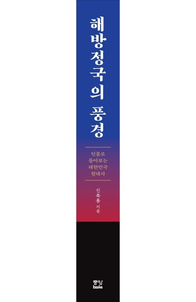

해방정국
1945년 8월 15일 광복 직후부터
1948년 8월 15일 대한민국 정부가 수립되기까지의 3년간을 말하는 건데
당시 좌익과 우익, 그리고 중도파 간의 갈등이 극에 달해
수많은 거물급 정치가들이 대낮에 총탄에 맞아 숨지는 암살의 시대에
정치 조폭들에 테러집단까지
난동 부리는 개막장 시대였음
근데 너무 개판오브 개판 시대에
인물 관계도 너무 복잡해서
교과서에서도 자세히 언급을 안하는 편임

해방정국
1945년 8월 15일 광복 직후부터
1948년 8월 15일 대한민국 정부가 수립되기까지의 3년간을 말하는 건데
당시 좌익과 우익, 그리고 중도파 간의 갈등이 극에 달해
수많은 거물급 정치가들이 대낮에 총탄에 맞아 숨지는 암살의 시대에
정치 조폭들에 테러집단까지
난동 부리는 개막장 시대였음
근데 너무 개판오브 개판 시대에
인물 관계도 너무 복잡해서
교과서에서도 자세히 언급을 안하는 편임
뭐 어쩌라고 그게 돈이 되냐? 성범죄 허위 고소 방지 형사처벌법이나 10년으로 만들고 애 낳게나 해야지 좆도 돈안되는걸 또 ㅋㅋㅋ
누가 맞고 누가틀린지, 누가 죽인건지 그냥 개판임
저떄는 진짜 개판이긴하지...
친일파 : 날 처벌하겠다? 니들 빨갱이지?
반민특위 : ㅅㅂ새끼들아

빨간 친일파, 파란 친일파
빨간 독립운동가, 파란 독립운동가
빨간 사회주의자, 파란 사회주의자
빨간 왕정복고주의자, 파란 왕정복고주의자
빨간 민주주의자, 파란 민주주의자
빨간 깡패, 파란 깡패
빨간 군인, 파란 군인....
ㅋㅋ ㄹㅇ 야인시대
그래도 각잡고 파다보면 조선판 바람의 검심 나오겠는데
조금만 잘못건드려도 너 이쪽이지 너 저쪽이지 당할수 있어서
우리가 교과서에서 찬양하면서 배웠던 독립운동가들이 이 혼란의 시대에서 사분오열으로 찢어져서 서로 죽이고 배신하고 이합집산 하던 시기라서 가르치기 정말 조심스러운 시대임... 한민족이 그토록 열망하던 독립을 이뤘으나 당시 영향력 있던 모든 인물들이 한 자리 해 쳐 먹기 위한 이권 다툼과 인간의 추악한 민낯을 적나라하게 보여주는 시대.
이게 맞다면 더더욱 자세히 가르쳐야 한다고 봄
거의 무정부상태였지
진짜 정작이런건 안가르치고
일본이 나쁘니
한민족이니
동포니 ..
자원 안나는 똥땅 지배권다툼도 이 정도면ㅋㅋ
친일파랑 손잡은 쪽에서 가리는게 클껄? 전쟁이라 반대하는 사람들 빨갱이로 몰면 쉽고.
그래서 친일파를 청산못하게 된거지. 북한놈들 때문에라도
이거 가르치면 교육과정 수립하다가 똑같은 일 한 번 더 일어날듯 ㅋㅋㅋㅋㅋㅋ
저 시기 다룬 교양 서적 중에 괜찮은게 버치 문서와 해방정국이라는 책인데 꽤 흥미로움 미군정 정치 고문단이었던 버치 대위가 남긴 기록들을 발굴해서 그걸 토대로 쓴 책인데 정치 쪽에 꽤 영향을 미친 인물이라 각종 비사들이 많음 근데 어쩔 수 없이 대위의 시선에서 본 거라 미군정 사령관 하지와 미국의 시각과는 다른 부분들이 꽤 존재함
야인시대가 대충 잘 묻어줬어
농담이아니라 진짜로 야인시대가 큰일함
모든 혼란상을 심영 고자로 묻어버림
밈 말고도 야인시대 2부가 실질적인 '1공화국 드라마' 역할을 한 거라고 평하는 학계 썰도 있음.
일제시대 : 어쩔 수 없군 지금은 임시동맹이다
1945년 일제가 망한 이후 : 우리 서로의 의견을 존중하도록 하자. 물론 내가 맞고 니가 틀리지만
독립투사는 본인 나름 이렇게 가야한다는 확고한 신념과 사명감을 가지고,
총과 폭탄으로 일제에게 본인의 생각을 알려주던 사람들이다.
독립투사는 하나의 생각을 가진 칼라로 이어진 단수가 아니다.
그냥 개판이였다 한마디로 퉁치는건 좀 어려운, 한번은 겪어야만 했던 시대적 흐름이라고 본다.
정당이 수백개였고 미군정도 통제가 안됐지
미군정 소련군정을 가르치는 순간 해방이 오로지 외세에 의해 이루어졌음이 드러나니깐 숨기는거지.
반민특위는 제대로 안되고 친일파는 오히려 당당하게 기승을 부리고 온갖 혼란스러움은 최대인데 특히 이걸관리해야할 미군정 책임자가 역대급 무능이라 아예 어찌해야할지를 모름. 그래서 내비둠. 괜히 혼란스러움이 가중되는게 아님....
교과서로 배운 독립투사들 중 꽤 많은 분들이 흑화하기 시작하다보니 조심스러워지긴 해